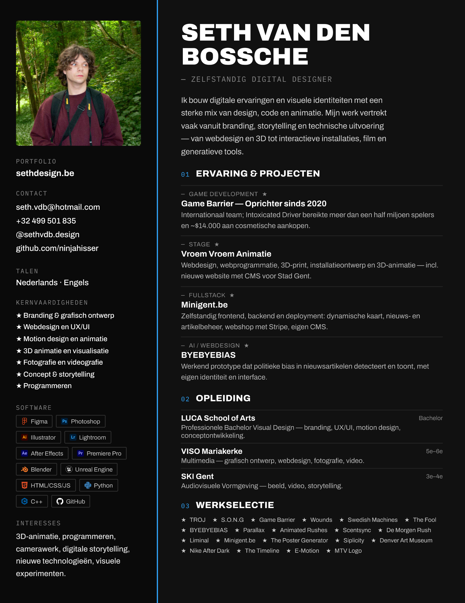

LUCA School of Arts
Bacheloropleiding met focus op branding, grafisch ontwerp, digitale media, UX/UI, motion design en conceptontwikkeling.

Zelfstandig digital designer met focus op branding, webdesign, motion design, 3D en digitale storytelling.
Bacheloropleiding met focus op branding, grafisch ontwerp, digitale media, UX/UI, motion design en conceptontwikkeling.
Afgestudeerd in Multimedia met een sterke basis in grafisch ontwerp, webdesign, fotografie, video, digitale media en creatieve software.
Opleiding gericht op audiovisuele vormgeving, beeld, video, storytelling en digitale creatie.
Basisopleiding waarin ik vaardigheden ontwikkelde zoals samenwerken, klantgerichtheid, verantwoordelijkheid nemen en efficiënt werken.
Internationaal team met focus op conceptontwikkeling, planning, communicatie en creatieve productie voor gameprojecten.
Portfolio met werk in branding, webdesign, 3D, motion design, fotografie, video en interactieve digitale ervaringen.
Werk met een sterke nadruk op visuele narratief, experimentele media en een doordachte gebruikerservaring.
Werkte aan webdesign, webprogrammatie, 3D-print, installatieontwerp, 3D-animatie en contentproductie, inclusief een nieuwe website met CMS en fysieke installaties voor Stad Gent.
Richtte een internationaal game developmentteam op; werkte aan programmering, gameplay en productie. Intoxicated Driver bereikte meer dan een half miljoen spelers en genereerde ongeveer 14.000 dollar aan cosmetische aankopen.
Ontwierp een werkend prototype dat politieke en ideologische bias in nieuwsartikelen visueel detecteert en toont, met een eigen identiteit, interface en promotiemateriaal.
Ontwierp en bouwde zelfstandig frontend, backend en deployment, inclusief een dynamische kaart, nieuws- en artikelbeheer, webshop met Stripe en een volledig eigen CMS.
Maakte een interactieve installatie met hand tracking en een eigen webapplicatie, waarbij geanimeerde klokken via Lottie en JavaScript in een publieke opstelling in Gent werden getoond.
Behoorde tot de winnaars van de rush-opdracht van De Morgen en behaalde een eerste plek in het artikel met een concept waarin illustratie en geprogrammeerde interactie samenkwamen.
3D-animatie, programmeren, camerawerk, digitale storytelling, nieuwe technologieen en visuele experimenten.